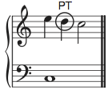
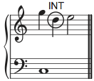
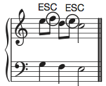

Musicianship Resources
Embellishing tones
Passing Tone (PT)

A passing tone is a non-chord tone (dissonance) that occurs between two chord tones, creating stepwise motion. The typical figure is chord tone – passing tone – chord tone, filling in a third (see example to the right), but two adjacent passing tones can also be used to fill in the space between two chord tones a fourth apart. A passing tone can be either accented (occurring on a strong beat or strong part of the beat) or unaccented (weak beat or weak part of the beat).
Complete Neighbor Tone (NT)

Like the passing tone, a complete neighbor tone is a non-chord tone (dissonance) that occurs between two chord tones; however, a complete neighbor tone will occur between two instances of the same chord tone. Also like the passing tone, movement from the chord tone to the neighbor tone and back will always be by step. A complete neighbor can be either accented or unaccented, but unaccented is more common. Double Neighbor Figure (DN) – Like the complete neighbor figure, the double neighbor figure begins and ends on the same chord tone. Between those two instances of the chord tone are tow non-chord tones—one a step above and the other a step below the chord tone. Though individually we may consider each of the two non-chord tones to be incomplete neighbors (below), working together in the double-neighbor figure they balance each other out and create a contiguous whole with the overall stability of a complete neighbor. A double neighbor figure is typically unaccented.
Incomplete Neighbor Tone (INT)

The incomplete neighbor tone is an unaccented non-chord tone that is approached by leap and proceeds by step to an accented chord tone. Broadly speaking an incomplete neighbor tone is any non-chord tone a step away from a chord tone that proceeds or follows it (and is connected on the other side by leap), but other kinds of incomplete neighbor tones have special names and roles that follow below.
Appoggiatura (APP)

An appoggiatura is a kind of incomplete neighbor tone that is accented, approached by leap (usually up), and followed by step (usually down, but always in the opposite direction of the preceding leap) to a chord tone.
Escape Tone (ESC)

An escape tone, or echappée, is a kind of incomplete neighbor tone that is unaccented, preceded by step (usually up) from a chord tone, and followed by leap (usually down, but always in the opposite direction of the preceding step).
Anticipation (ANT)

An anticipation is essentially a chord tone that comes early. An anticipation is a non-chord tone that will occur immediately before a change of harmony, and it will be followed on that change of harmony by the same note, now a chord tone of the new harmony. It is typically found at the ends of phrases and larger formal units.
Suspension (SUS)

A suspension is formed of three critical parts: the preparation (accented or unaccented), the suspension itself (accented), and the resolution (unaccented). The preparation is a chord tone (consonance). The suspension is the same note as the preparation and occurs simultaneous with a change of harmony. The suspension then proceeds down by step to the resolution, which occurs over the same harmony as the suspension. The suspension is in many respects the opposite of the anticipation: if the anticipation is an early arrival of a chord tone belonging to the following chord, a suspension is a lingering of a chord tone belonging to the previous chord that forces the late arrival of the new chord’s chord tone. However, the suspension must be treated with a great deal more care than the anticipation. The most common suspensions (and their resolutions) in upper voices form the following intervallic patterns against the bass: 9–8, 7–6, 4–3. (With the exception of 9–8, the pitch class of the resolution tone should never sound in another voice simultaneous with the suspended tone.) Instead of SUS, it is preferable to notate the intervallic pattern in the thoroughbass figures.
Retardation (RET)

A retardation is essentially an upward-resolving suspension. It is almost always reserved for the final chord of a large formal division (or a movement), and it frequently appears simultaneously with a suspension (as seen in the example to the right). Instead of RET, it is preferable to notate the intervallic pattern in the thoroughbass figures.